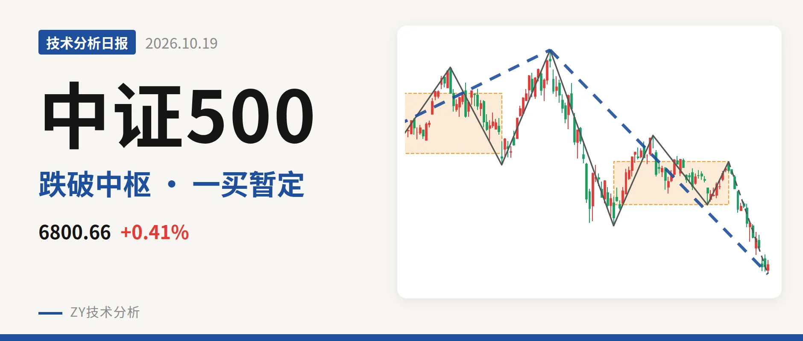

中证500｜新低不新弱，一买暂定6719.82点

最近日线中枢 7451.12—7922.62点，收盘位于中枢之下
一句话：日线下跌延续，新低不新弱，一买暂定。
📉 走势结构：日线下跌线段仍为主导
当前中证500仍处在7月1日以来的日线下跌线段中，这一段没有结束。更大级别上，2024年2月5日至7月1日的上涨段之后，7月1日以来的回落已跌破2025年11月24日线段三买6797.50点，说明该三买只对应更小级别，对上涨段的支撑已经丢失。日线线段自9147.56点回落到6719.82点，内含5笔，最近一笔低点还在向下移动，结构仍以回落为主。2025年11月24日至7月1日上涨段涨约34.6%，7月1日以来下跌段已跌约26.5%，回撤较深。

📍 中枢与位置：最新价跌破最近日线中枢下沿
最新收盘6772.75点位于7月30日至9月22日日线笔中枢7451.12—7922.62点下方，低于中枢下沿约9.1%。这个中枢比1月26日至6月8日的中枢8014.66—8671.35点明显下移，表明日线中枢已经下移。价格跌破下沿后没有回到中枢内部，说明当前不是简单的中枢震荡，而是向下离开中枢后的延续。
🛑 买卖点：卖点一个比一个低，一买暂定
日线笔级别卖点从7月1日一卖9147.56点，到8月18日二卖8211.31点、9月22日类二三卖7922.62点，一个比一个低，反抽高点被持续压低。10月16日录得6719.82点的一买，但对应9月22日以来的下跌笔还在延续，这个一买只能先当暂定的一买，低点会随这一笔的延续而变化。若该笔继续下探，一买位置需跟随修正。反弹高点均未回到前中枢上沿8671点附近。

📊 背驰：新低不新弱，绿柱面积收缩
最关键的力度对比是7月1日至7月30日下跌笔与9月22日以来的下跌笔。前者绿柱面积2687，DIF低点-285.2；后者价格新低至6719.82点，低于前一笔7221.95点，但绿柱面积929，DIF低点-237.1，高于-285.2。这是新低不新弱，显示下跌力度在衰减。不过9月22日以来的下跌笔仍在延续，绿柱面积还会变化，背驰只能按暂态看，还不能定型。最新DIF仍低于DEA，短期下跌动能尚未完全扭转。
🧭 关键位置观察：反抽看7451点一线
日线结构能否转强，先看反抽回到7451点附近的情况。若反抽回不到7451点上方，结构上会构成三卖，下跌线段继续扩展。重新站上7451点，则更可能是中枢扩展；要扭转偏弱格局，还需收复7922点附近。当前最新价跌破中枢下沿，卖点一个比一个低，绿柱收缩但尚未定型，结构偏弱。
⚠️ 本文为基于公开行情数据的缠论技术结构记录，由程序自动计算并生成，仅供学习交流，不构成任何投资建议。市场有风险，投资需谨慎。